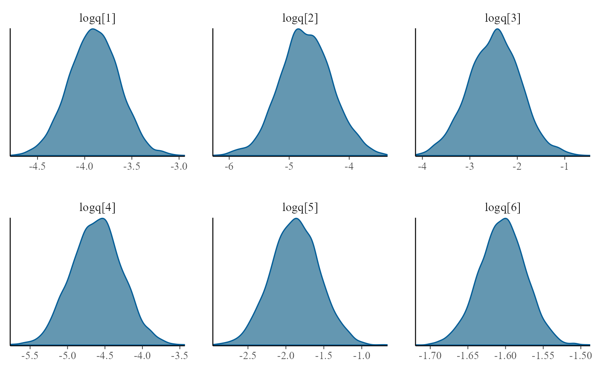

Advanced phase-type models in msmbayes
Christopher Jackson chris.jackson@mrc-bsu.cam.ac.uk
2025-08-28
Source:vignettes/nphase.Rmd
nphase.RmdTo fit a model with non-exponential sojourn distributions
(semi-Markov model) in msmbayes, the easiest way is to use
phase-type approximations to Weibull and Gamma distributions, as
explained in the vignette about this
technique These represent the sojourn distribution with two
parameters - which may be all that is possible to identify from data
where the state is only intermittently observed.
A more advanced approach to semi-Markov modelling in
msmbayes is to specify a phase-type distribution
directly.
Phase-type semi-Markov models
In a multi-state model, suppose we do not believe the sojourn time in a particular state follows an exponential distribution. For example, in the infection model, suppose we do not believe that the time spent in the “test positive” state is exponential.
We can relax this assumption by building a “semi-Markov” model, where the sojourn time in this state follows a more complex distribution. One way to do this is to replace this state by a series of two (or more) latent or hidden states, known as “phases”. For example, with two phases:

In a phase-type model, we allow progression from one phase to the next, but not transitions from later to earlier phases (or jumps between non-adjacent phases, if there are 3 phases or more). Otherwise, we allow the same transitions out of each phase as were allowed in the original model (to state 1, in this example)
We then assume transitions between and out of the phases follow exponential distributions. That is, we assume a Markov model on the latent state space. The test-positive state then has a sojourn distribution known as the “Coxian” phase-type distribution, instead of the exponential.
Note: This is an example of a hidden Markov model, though one of a specific form where some states are observed correctly, and some states are latent. Phase-type models are a convenient way to build semi-Markov models for intermittently-observed data, because there are standard algorithms for computing the likelihood of a hidden Markov model.
Fitting phase-type models in msmbayes
To assume a phase-type sojourn distribution for one or more states in
a msmbayes model, set the nphase argument.
This is a vector of length equal to the number of states, giving the
number of phases per state. Any elements of nphase that are
1 correspond to states with the usual exponential sojourn
distribution.
Example: data simulated from a standard Markov model
Here we extend the 2-state model for the simulated infection data to give state 2 (infection) a two-phase sojourn distribution. These data were originally simulated assuming an exponential sojourn distribution in state 2 (with rate 3). In this situation, we would expect the estimated rates of transition out of each phase to be identical.
Q <- rbind(c(0, 1),
c(1, 0))
draws <- msmbayes(infsim2, state="state", time="months", subject="subject",
Q=Q, nphase=c(1,2), fit_method = "optimize")
summary(draws)## # A tibble: 6 × 7
## name from to posterior mode prior_string prior
## <chr> <chr> <chr> <rvar[1d]> <dbl> <chr> <rvar[1d]>
## 1 q 1 2p1 0.74 ± 0.35 0.674 0.14 (0.0027, 6.8) 0.96 ± 4.4
## 2 q 2p1 1 4.37 ± 2.08 3.99 0.14 (0.0027, 6.8) 0.96 ± 4.4
## 3 q 2p1 2p2 0.32 ± 1.96 0.0382 0.14 (0.0027, 6.8) 0.96 ± 4.4
## 4 q 2p2 1 7.43 ± 54.31 0.758 0.14 (0.0027, 6.8) 0.96 ± 4.4
## 5 mst 1 NA 1.65 ± 0.77 1.48 7.4 (0.147, 372) 52.22 ± 237.6
## 6 mst 2 NA 0.30 ± 0.16 0.261 NA NA ± NAThe phased states are labelled specially here, e.g. the first phase
of state 2 is labelled "2p1". The estimated transition
rates from the two phases of state 2 to state 1 are not significantly
different from 2 - but there is large uncertainty around the estimated
rates, since this model is over-fitted to the data. Implementing the
same model in msm would give extremely large confidence
intervals around the estimated rates.
Example: data simulated from a phase-type model
The following code simulates a dataset from the following phase-type model structure

with a transition intensity matrix (on the latent state space) given
in the R object Qg. This code uses the ability of the
function simmulti.msm() from the msm package
to simulate from hidden Markov models.
Qg <- rbind(c(0, 0.18, 0.008, 0.012),
c(0, 0, 0.016, 0.024),
c(0, 0, 0, 0.2),
c(0, 0, 0, 0))
E <- rbind(c(1,0,0,0), # hidden Markov model misclassification matrix
c(1,0,0,0),
c(0,1,0,0),
c(0,0,1,0))
nsubj <- 10000; nobspt <- 10
set.seed(1)
sim.df <- data.frame(subject = rep(1:nsubj, each=nobspt),
time = seq(0, 100, length=nobspt))
library(msm)
sim.df <- simmulti.msm(sim.df[,1:2], qmatrix=Qg, ematrix=E)We fit the phase-type model to the simulated data using both
msmbayes and msm.
The fast optimization-based method is used to approximate the Bayesian posterior here, for speed of demonstration, but in practice we would generally want to cross-check the results with MCMC. The posterior distributions for these models are likely to have a skewed and multimodal shape which is not represented well by a normal approximation.
Q3 <- rbind(c(0,1,1),c(0,0,1),c(0,0,0))
draws <- msmbayes(data=sim.df, state="obs", time="time", subject="subject",
Q=Q3, nphase=c(2,1,1), fit_method="optimize")
bayesplot::mcmc_dens(draws, pars=sprintf("logq[%s]",1:6))
msm needs some tuning to converge, in particular the use
of fnscale and explicit initial values for the transition
rate. In practice, sensitivity analysis to these initial values would be
needed to confirm that the reported estimates are the global maximum
likelihood estimates, rather than one of the local maxima or saddle
points.
Q3 <- rbind(c(0,0.5,0.5),c(0,0,0.5),c(0,0,0))
s.msm <- msm(obs ~ time, subject=subject, data=sim.df, phase.states=1, qmatrix=Q3,
phase.inits=list(list(trans=0.05, # seems to need these
exit=matrix(rep(0.05,4),nrow=2,byrow=TRUE))),
control = list(trace=1,REPORT=1,fnscale=50000,maxit=10000))Reassuringly, the Bayesian and frequentist methods give similar estimates of the transition intensities, which agree (within estimation error) with the values used for simulation.
qmatrix(draws)## rvar<4000>[4,4] mean ± sd:
## 1p1 1p2 2 3
## 1p1 -0.0413 ± 0.0026 0.0210 ± 0.0057 0.0098 ± 0.0045 0.0105 ± 0.0037
## 1p2 0.0000 ± 0.0000 -0.2587 ± 0.0911 0.0975 ± 0.0580 0.1611 ± 0.0528
## 2 0.0000 ± 0.0000 0.0000 ± 0.0000 -0.2012 ± 0.0062 0.2012 ± 0.0062
## 3 0.0000 ± 0.0000 0.0000 ± 0.0000 0.0000 ± 0.0000 0.0000 ± 0.0000
qmatrix.msm(s.msm,ci="none")## State 1 [P1] State 1 [P2] State 2 State 3
## State 1 [P1] -0.1986608 0.17706760 0.01059025 0.01100295
## State 1 [P2] 0.0000000 -0.03930873 0.01593401 0.02337472
## State 2 0.0000000 0.00000000 -0.20150880 0.20150880
## State 3 0.0000000 0.00000000 0.00000000 0.00000000
Qg## [,1] [,2] [,3] [,4]
## [1,] 0 0.18 0.008 0.012
## [2,] 0 0.00 0.016 0.024
## [3,] 0 0.00 0.000 0.200
## [4,] 0 0.00 0.000 0.000The mean sojourn times in states of a phase-type model can either be
calculated for the observable state space (states="obs",
the default), or the latent state space
(states="phase").
mean_sojourn(draws)## # A tibble: 2 × 3
## state posterior mode
## <int> <rvar[1d]> <dbl>
## 1 1 26 ± 1.47 27.7
## 2 2 5 ± 0.15 4.98
mean_sojourn(draws, states="phase") ## # A tibble: 3 × 5
## state posterior mode stateobs statephase
## <chr> <rvar[1d]> <dbl> <int> <int>
## 1 1p1 24.3 ± 1.36 25.5 1 1
## 2 1p2 4.3 ± 1.48 4.23 1 2
## 3 2 5.0 ± 0.15 4.98 2 1More practical experience of using general phase-type models for intermittently-observed multi-state data is needed. In particular:
How to specify substantive prior information. In the examples above, the default log-normal(-2,2) priors were used for transition intensities. But we need a better way to choose these based on judgements about interpretable quantities, e.g. the mean sojourn time in the phased state.
Limited experience suggests that the Bayesian method is more likely than
msmto produce a plausible result without the need for tuning. However, can the sampling algorithms always be relied upon?How to build and interpret models with covariates on intensities. Covariates can be placed on intensities for transitions in the phased state-space, but this has not been tested in practice. There is a risk of over-fitting, and strong constraints on covariate effects are expected to be necessary.
However, with intermittently-observed data, it is uncertain to what extent we will be able to identify a detailed shape for the sojourn distribution from the data. Therefore using phase-type approximations to shape-scale distributions is expected to be a more useful approach to semi-Markov modelling.